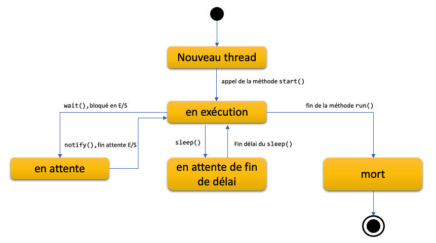

Langage JAVA
Concurrence
Module INF330 - Programmation avancée
Gustavo BOBEFF
2021 - 2022
Définition
- Définition Wikipedia :
- La programmation concurrente est un style de programmation tenant compte, dans un programme, de l'existence de plusieurs piles sémantiques. Ces piles peuvent être appelées threads, processus ou tâches.
- Elles sont matérialisées en machine par une pile d'exécution et un ensemble de données privées.
- Les threads disposent d'une zone de mémoire partagée alors que les processus sont strictement isolés.
L’exécution concurrente, omniprésente ...
- tous les jours, on utilise le téléphone mobile sans se poser de questions
- on peut téléphoner et recevoir des sms en parallèle
- l'alarme réveil peut se déclencher pendant qu'on est en train d’écouter de la musique ou regarder une vidéo
- les applications agissent de manière collaborative
- cette collaboration repose sur des concepts et outils dédiés fournis par le système d’exploitation
- tous les jours, on utilise un browser pour consulter des informations sur le web
- on est potentiellement des dizaines / centaines / milliers à accéder à certains sites simultanément mais on n'a pas le sentiment d'attendre
- les serveurs Web sont capables de traiter un grand nombres de requêtes en parallèle
- cette parallélisation repose aussi sur des concepts et outils dédiés fournis par le système d’exploitation
Domaines d'application
- Entrées/sorties non-bloquantes
- Alarmes, Réveil, Déclenchementpériodique
- Algorithmes parallèles
- Modélisation d’activités parallèles
- Méthodologies
les processus
- Un système multi-tâches est capable d'exécuter plusieurs programmes en parallèle sur une même machine.
- La plupart du temps, une machine n'a qu'un seul processeur qui ne peut exécuter qu'un seul programme à la fois.
- Un programme en cours d'éxécution est appelé un processus.
- La plupart des systèmes d'exploitation sont équipés d'un ordonnançeur de tâches qui donne à tour de rôle le processeur aux processus.
- Chaque processus est activé de façon cyclique et pendant une courte durée
- L'utilisateur a l'impression que plusieurs processus sont en cours d'exécution
les classes de processus
- Processus = ensemble d'instructions + état d'exécution (pile, registres, pc, tas, descripteurs d'E/S, gestionnaires de signaux ...)
- Deux classes principales de processus
- Processus lourd (ou tâche) : ne partage pas son état (sauf des espaces mémoire partagés déclarés explicitement)
- Processus léger (ou thread) : partage son tas, ses descripteurs, ...
Les Threads
- Les ressources allouées à un processus (temps processeur, mémoire) vont être partagées entre les threads qui le composent.
- Les threads d'un même processus partagent le même espace d'adressage,les mêmes variables d'environnement, les mêmes données, ... contrairement aux processus.
- Un processus possède au moins un thread (qui exécute le programme principal main()).
- Les programmes qui utilisent plusieurs threads sont dits multithreadés.
- Les threads font partie intégrante du langage JAVA. Elles sont gérées grâce à la classe Thread.
Méthode simple : utilisation de la classe java.lang.Thread
- créer une classe qui hérite de la class Thread
- redéfnir la méthode run() pour y inclure les traitements à exécuter par le thread
- pour créer et exécuter le thread, il faut instancier un objet et appeler sa méthode start() qui va créer le thread et elle-même appeler la métho de run()
résultat
Méthode simple : utilisation de la classe java.lang.Thread
- Difference entre run() et start() : la méthode run() contient le code à exécuter par le thread : elle peut être appelée mais aucun nouveau thread n'est lancé.
résultat
Méthode simple : utilisation de la classe java.lang.Thread
- Thread.sleep : utilisée pour arrêter l’exécution du thread en cours pendant une durée spécifique
- Une fois cette durée écoulée, le thread qui s’exécute le plus tôt recommence à s’exécuter.
résultat
Méthode simple : utilisation de la classe java.lang.Thread
- On peut interrompre le thread avec la méthode interrupt() s'il est toujours en cours d'exécution.
résultat
Méthode simple : utilisation de la classe java.lang.Thread
- Cycle de vie 
Méthode simple : utilisation de la classe java.lang.Thread
- Limitations
- lein fort entre le traitement (quoi) et la méthode d'exécution (comment)
- impossible d'exécuter le même traitement dans threads différents sans répéter le code
- Solution ? On utilise l'interface Runnable ...
Méthode pratique : l'interface java.lang.Runnable
- L'interface Runnable permet de créer un objet, que l'on utilisera ensuite comme constructeur d'un Thread.
- C'est la méthode start() de l'objet qui sera responsable de la création et de l'activation du thread.
résultat
Méthode pratique : l'interface java.lang.Runnable
- Avec l'introduction des interfaces fonctionnelles (comportant exactement une et une seule méthode publique), on peut écrire un objet runnnable comme il suit :
Limitations des méthodes simples
- On doit créer un thread manuellement à chaque fois qu'un traitement asynchrone doit être exécuté.
- Augmente la complexité des applications (risque de contention).
- Consomation de mémoire peu optimisée.
- Adaptées pour de petites applications.
- Solution ? utilisation du framework Executor
- disponible dans le package java.lang.concurrent depuis Java 5
Utilisation du framework Executor
- Eléments fondamentaux du frameworks sont :
- l'interface Callable (similaire à l'interface Runnable mais elle permet aussi de retourner une valeur)
- l'interface Executor
- l'interface ExecutorService
- l'interface Runnable
- et surtout la classe Future
Utilisation du framework Executor
- la classe Future<T>
- le traitement associé à un objet Runnable ou Callable est exécuté dans un thread
- en générale le résultat du traitement n'est pas disponible avant un certain temps
- dans ce cas on peut attendre le résultat et le récupérer dans un objet Future<T>
Utilisation du framework Executor
- Liste (partielle) des méthodes de l'interface ExecutorService :
|
Méthode |
Fonctionnalité |
| void execute(Runnable command) | exécute le traitement mais elle ne retourne aucun résultat |
|
Future<?> submit(Runnable command) Future<V> submit(Callable<V> task) |
exécute le traitement en retournant le résultat du traitement dans un objet Future<V> et le résultat est de type V |
| void shutdown() | demande au ExecutorService de ne plus accepter de tâches et il arrête le ExecutorService une fois tous les threads en cours terminés |
| List<Runnable> shutdownNow() | arrête les tâches en cours et retourne la liste de tâches qui n'ont pas être exécutées |
| boolea isShutdown | retourne true si l'ExecutorService est arrêté (tous les threads terminés) |
| boolean awaitTermination(long timeout, TimeUnit unit) | permet d'attendre l'arrêt de l'ExecutorService pendant une période de temps spécifique |
| T invokeAny(Collection<Callable<T>> tasks) | exécute une collection de threads Callable, retourne un objet instance du type paramétré T, correspondant au résultat du premier thread |
| List<Future<T>> invokeAll(Collection<Callable<T>> tasks) | retourne une liste de résultats Future<T> dont l'ordre respecte le même positionnement des threads dans la collection d'entrées et l'ensemble des résultats est obtenu et utilisable que lorsque tous les threads en entrée ont terminé leur exécution |
Utilisation du framework Executor
- Pool de threads
- Permet de contenir un ensemble de threads qui pourront être utilisés pour exécuter des tâches.
- Ils sont particulièrement utiles pour exécuter des tâches similaires et indépendantes.
- Chaque thread consomme de la ressource (CPU et mémoire)
- le nombre de threads exécutables dépend
- des ressources de la machine
- du système d'exploitation
- Nombre de threads disponibles sur la machine
résultat
Utilisation du framework Executor
- Pour simplifier l'utilisation de l'interface ExecutorService, Java fournit l'implémentation Executors
Utilisation du framework Executor
- Exemple de pool simple (un seul thread)
résultat
Utilisation du framework Executor
- Exemple : pool de 4 threads
résultat
Utilisation du framework Executor
- Exemple : utilisation de Callable pour retourner une valeur
résultat